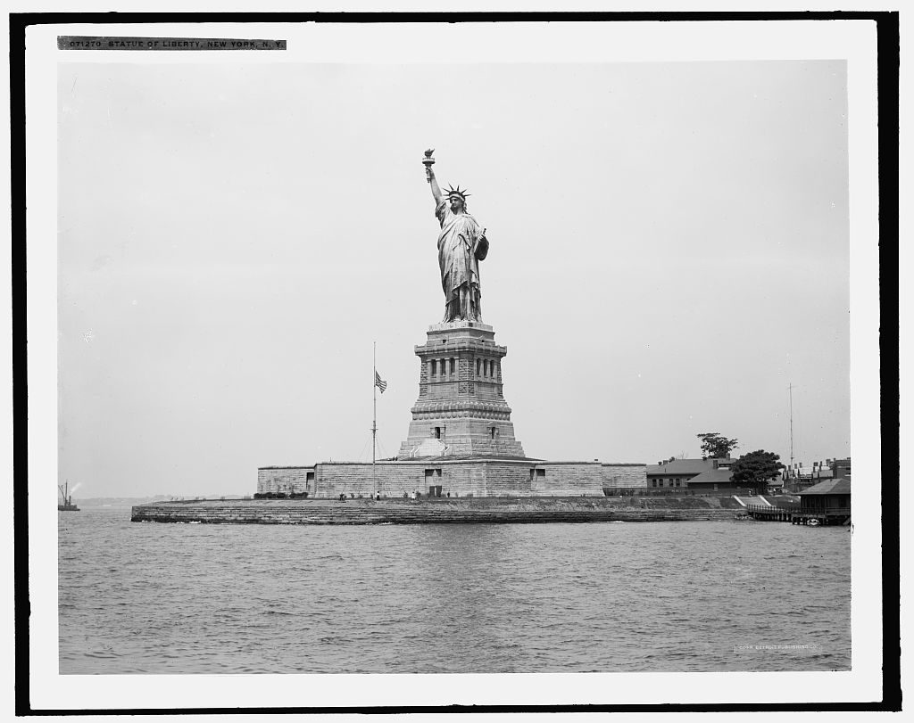

American Party History
PRESIDENTIAL ELECTION
Electoral votes by state
DOCUMENTS · ART · NATIONAL SYMBOLS
The American story in view.
Remembering the founding
Trumbull’s retrospective painting depicts the drafting committee presenting its work on June 28, 1776.
The Declaration of Independence
Adopted July 4, 1776. Delegates began signing the engrossed parchment on August 2.

NATIONAL SYMBOLLiberty and belonging
A historic view of the Statue of Liberty, photographed between 1900 and 1920.
NATIONAL · STATE · TERRITORIAL
The party history directory.
Explore the organizations, movements and coalitions around the two major parties. Follow their origins, ideas, constituencies and relationships, with the sources beside each history.
A growing atlas. These profiles broaden the realignment study; they are not a census of every local party or electoral ticket. Some entries cover factions, advocacy organizations or several connected parties. State and territorial histories belong here even where the presidential map has no electoral allocation.
Repeated names can refer to different organizations.
ISSUES, COALITIONS, AND ORGANIZATIONS
Party evolution
Choose a period to compare party coalitions in their historical context. The Republican Party founded in the 1850s is distinct from Jefferson’s earlier Republican organization.
THE EVIDENCE BEHIND THE ATLAS
Source library
Search the realignment study, the party-history companion and dated election supplements. Read sources in context: platforms describe positions, election records document outcomes, and interpretations explain relationships. Companion records preserve the supplied study’s evidence descriptions; not every link has been independently rechecked.
FOR STUDENTS, TEACHERS, AND RESEARCHERS
Reading the atlas
Explore party formation, national and regional organizations, territorial histories and multiple realignments. The presidential map still ends with the completed 2024 election; the 2026 Senate layer records separately dated midterm reporting.